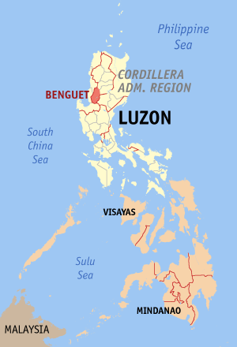
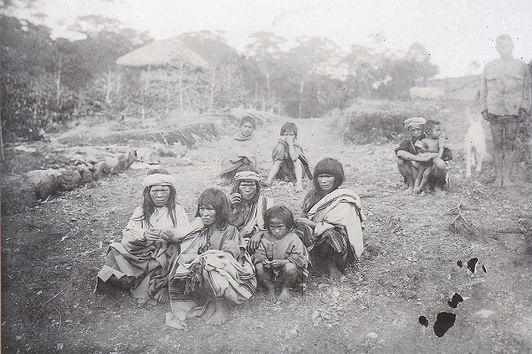
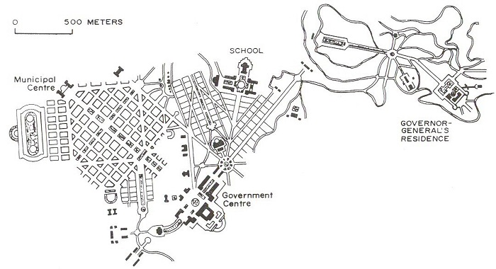
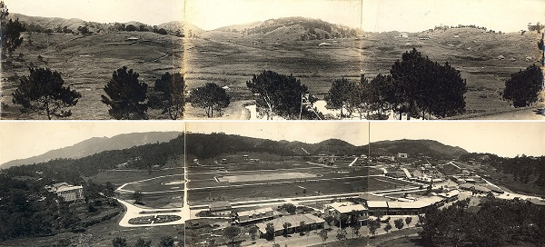

When Daniel Burnham visited the Philippines in 1904-5 his trip to East Asia resulted in the production of two monumental urban plans: for Manila, and for the summer capital city at Baguio...
Read more >

At the time the Americans began exploring the possibility of developing a new city at Baguio, the local population belonged to the Igorot ethnic group. Considered by the Spanish to be living in ways outside of the bounds of civilisation, these ‘mountain people’ were the dominant population group in the mountainous regions of North Luzon. For the Americans the creation and development of Baguio was vital to not only invigorating the economy of the north of the Philippines, but also the importation of modern cultural mores...
Read more >

With respect to the history of urban planning in the Philippines the 1905 plans for Manila and Baguio presented a watershed: the instigation of a new urban form/the removal of Spanish/Catholic spatial logic. In the case of Baguio the plan was affected by the local topography. The two governmental centres were sited near to the peaks of two hills, and faced towards each other: this symbolised the importation of American democratic politics to the local city council...
Read more >

Unlike other cities in the Philippines, Baguio from its inception was designed as a total urban environment, and one that was to harmonise with the distinct landscape in Benguet Province. Signifying the modernisation of the Philippines, the transformation of a hitherto barren landscape into a modern city, was to the Americans about demonstrating to Filipinos the ‘uplifting’ and ‘civilising’ of local society...
Read more >
At the centre of the plan for Manila was Rizal Park, a Washington DC-esque Mall space. In Baguio, Burnham originally recommended the laying out of an esplanade in the urban core between the local and national government districts but in the light of the intervention of William E. Parsons, the colonial government’s Consultant Architect, the esplanade was subsequently redesigned into a large, open park space: Burnham Park...
Read more >